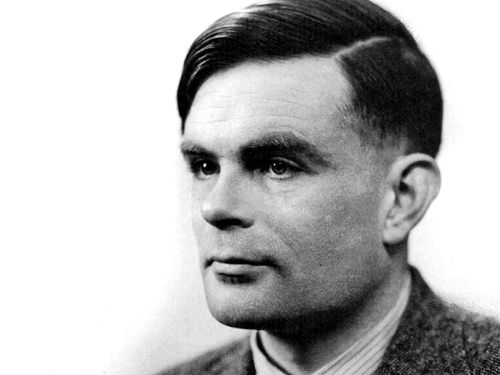

Alan Turing
Padre dell'Informatica
BIOGRAFIA
 Alan Mathison Turing nacque a Londra il 23 giugno 1912 .
Già in tenera età diede segno della genialità che negli anni futuri lo avrebbe reso famoso in tutto il mondo.
Tuttavia, a causa della sua enorme passione per le materie scientifiche, divenne malvisto dai professori della sua prima scuola e, durante i primi anni,
ebbe quindi grandi difficoltà ottenendo il diploma a stento.
Nonostante le difficoltá iniziali fu poi ammesso nel 1931 al prestigioso King's College di Cambridge, dove approfondì i suoi studi sulla meccanica quantistica,
la logica e la teoria della probabilità.
Nel 1934 si laureò con il massimo dei voti e nel 1936 vinse lo Smith’s Prize presso l'Università di Cambridge.
Nello stesso anno si trasferì negli Stati Uniti, alla Princeton University, dove studiò per due anni, ottenendo infine un Dottorato di Ricerca.
In quegli anni pubblicò l'articolo "On computable Numbers, with an application to the Entscheidungsproblem" nel quale descrisse quella che sarebbe poi stata
definita "macchina di Turing".
Durante la seconda guerra mondiale, Turing mise le sue capacità matematiche al servizio del Department of Communications inglese per decifrare i codici usati
nelle comunicazioni tedesche, criptate tramite il cosiddetto sistema Enigma.
Con l'entrata in guerra dell'Inghilterra Turing fu arruolato nel gruppo di crittografi con sede a Bletchley Park, e nel 1940 divenne capo del gruppo.
Turing lavorò per tutta la guerra alla decrittazione, sviluppando ricerche già svolte dall'Ufficio Cifra polacco con la macchina Bomba, progettata in Polonia
da Rejewski.
L'attività di Alan Turing a Bletchley Park era coperta dal segreto militare più assoluto.
Una volta finita la guerra, il governo britannico impose a tutti coloro che avevano lavorato alla decrittazione il divieto di parlare o scrivere di qualsiasi
argomento trattato in quel periodo.
Questo "silenzio" fece sì che dati e informazioni su queste attività cominciassero a essere pubblicati solo nel 1974, quando Turing e molti altri suoi colleghi
erano già morti da tempo.
Successivamente, nel 1950, sulla rivista Mind Turing scrisse un articolo dal titolo “Computing machinery and intelligence”, in cui descriveva quello che
sarebbe divenuto noto come il test di Turing.
Egli era convinto che si potesse raggiungere un'intelligenza davvero artificiale solo seguendo gli schemi del cervello umano, nonostante sambrasse una cosa
assai lontana dalle visioni di quel tempo, su questo articolo si basò buona parte dei successivi studi sull'intelligenza artificiale.
L'anno seguente fu eletto Membro della Royal Society di Londra e si trasferì all'Università di Manchester, dove lavorò alla realizzazione del Manchester Automatica Digital Machine, uno dei primi computer a programma memorizzato.
Il 31 marzo 1952 fu poi arrestato per omosessualità e portato in tribunale.
Condannato, fu costretto a scegliere tra una pena detentiva o la castrazione chimica, ma per non finire in prigione, lo scienziato optò per la seconda alternativa.
Per oltre un anno si sottopose ai trattamenti, ma la depressione legata a questi ultimi e all'umiliazione subita fu, secondo molti storici, il motivo determinante
che lo indusse a suicidarsi il 7 giugno 1954.